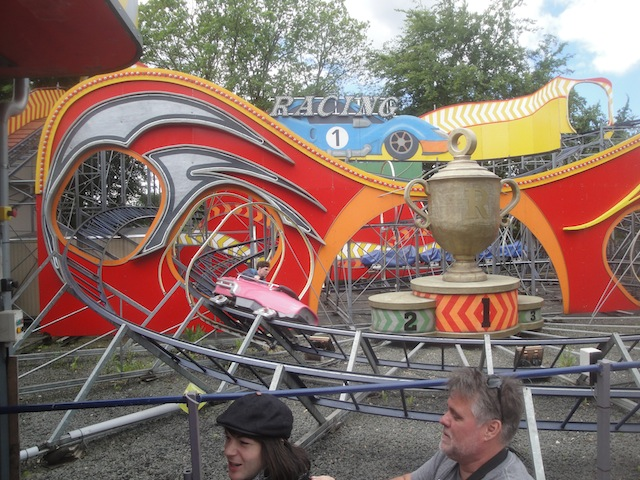
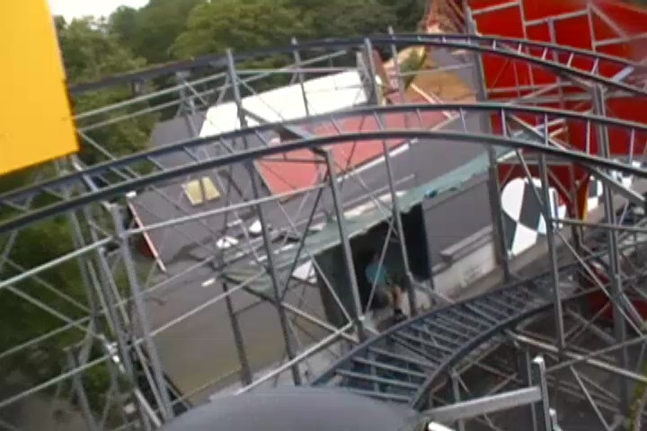
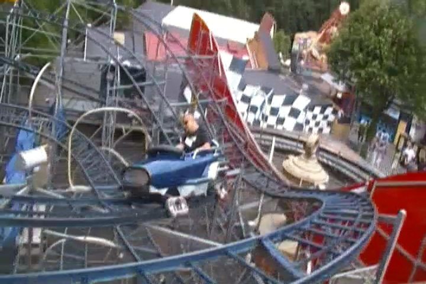

| |
Racing Review

For today's review, we are heading to Bakken to review Racing. And no. This is not a racing coaster at all. This is actually a Flitzer. There are so many questions I have about this. Why is this ride called Racing when it doesn't race? Who are you supposed to race? Why did you come up with this idea? Why? Why? Just...why? Whatever. Let's just get in the cars, and get this credit. We go around a turn and head up the lifthill. We go up the small lifthill, looking at the track and all the other cars going through the course. Is this who we're supposed to be racing? Cause that's not racing. That's just having a bunch of cars on a tight track. I guess we'll be racing our imaginary enemies. So scream at those imaginary demons, shake your fist at them, and watch as the other people think you're a raving lunatic. We crest the lifthill, in the middle of the trees, and we're off. We go around a turn and a small drop. Wee!!! We rise up another turn, go around another curved turn, and through some cardboard cutout, as well as some trims. We then head through a curved drop and up another small curved hill. Not a ton of laterals. But screw it. We're having fun. At this point, we're really losing a lot of speed. It almost seems as if we won't make it through this part of the ride. But we do, and then we pretty much do the exact same thing. Small curved drop, curve back up. I think this ride is on a loop. Oh wait. A bigger curved drop. YAY!!! More speed. Wee!!! We then head up another curved hill, and go through a couple wild mouse zig zag turns. Now we actually get some decent laterals and this is becoming more interesting. And hey, we get to go down another spiral drop into some low to the ground turns. We then head around another upward curve, and into the brake run. I know a couple people will call this Outdoor Space Mountain. And to a certain extent, I see the Flitzers being...similarish. But nope. Even if you took Space Mountain, removed all the theming, music, and stripped it naked, this isn't it. It's way too carnivalish. This feels like they just literally took a coaster from their county fair, and made it a permanent attraction at Bakken. And honestly, that's exactly what they did. This ride used to run at carnivals in Denmark from 1971 to 1974 before finding a home at Bakken. I didn't know that until I did some research for this review. So...if carnival coasters are your thing, this ride is for you. Otherwise, it's just a credit.
5/10
Location: Bakken
Opened at Danish Fairs in 1971
Relocated to Bakken sometime in the 1980s
Built by: Zierer
Last Ridden: July 14, 2014
Racing Photos


|